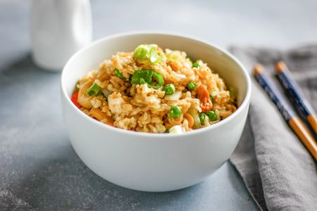

Vegetarian Rice

Ingredients
- 1/2 chopped onion
- 1 chopped garlic clove
- 1 chopped courgette
- 1 grated carrot
- 1 chopped red or yellow pepper
- 75g frozen peas
- 1/2 tin of chopped tomatoes
- 350ml Vegetable stock
- 150g Dried brown rice
- 1 tbsp of dried parsley
- 1 tsp tumeric
- Seasoning
Method
- Serves 2: Prep time 10 mins: cook time 25 mins
- 1)Add onion, garlic and tumeric to pan with a splash of veg stock
- 2)Stirring, cook gently for a 3 mins then add the chopped courgette, grated
carrot and chopped pepper
- 3)Stir well for a further 3 mins then add the dried rice
- 4)Stir rice in well with the vegetables
- 5)Once rice os distributed well throughout the mixture add the stock-‐ leave to
boil
- 6)Once boiled immediately turn heat down to simmer and cover. Cook for 10
mins
- 7)Add in chopped tomatoes and frozen peas and stir
- 8)Cover and simmer for a further 10 mins
- 9)Once cooked stir in dried parsely with seasoning
- 10)Spoon rice into 2 dishes